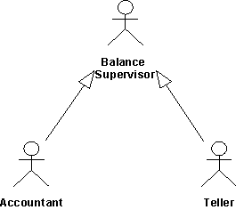

| Concept: Use-Case Model |
 |
|
| Related Elements |
|---|
ExplanationA use-case model is a model of the system use cases and actors and the relationships between them. In addition, the use-case model may contain packages that are used to structure the model to simplify analysis, communications, navigation, development, maintenance and planning. Much of the use-case model is in fact textual, with the text captured in the Use-Case Specifications that are associated with each use-case model element. However, the addition of UML diagrams (and the underlying model) provides a graphical representation of the structure and relationships between the use cases and actors. This graphical representation acts as a kind of “Table of Contents” or navigation map to the information; simplifying communications, analysis and navigation of the information. The use-case model serves as a unifying thread throughout system development. It is used to capture functional requirements and as the basis for design, iteration planning, and testing. Basic model elementsThe use-case model contains, as a minimum, the following basic model elements. ActorA model element representing each actor. Properties include the actors name and brief description. See Artifact: Actor for more information. Use CaseA model element representing each use case. Properties include the use case name and use case specification. See Artifact: Use Case and Concept: Use Case for more information. AssociationsAssociations are used to describe the relationships between actors and the use cases they participate in. This relationship is commonly known as a “communicates-association”. Use-Case DiagramThe diagram below shows a part of a use-case model for the Recycling-Machine System.
This diagram shows two actors (Customer and Operator), three use cases (Print Daily Report, Administer Deposit Item, and Recycle Items) and the associations between the performing actors and the use cases. There are many ways to model a system, each of which may serve a different purpose. However, the most important purpose of a use-case model is to communicate the system's behavior to the customer or user. Consequently, the model must be easy to understand. The users and any other system that may interact with the system are the actors. Because they represent system users, actors help delimit the system and give a clearer picture of what it is supposed to do. Use cases are developed on the basis of the actors' needs. This ensures that the system will turn out to be what the users expected. Advanced model elementsThe use-case model may also contain the following advanced model elements. SubjectA model element that represents the boundary of the system of interest. Use-Case PackageA model element used to structure the use case model to simplify analysis, communications, navigation, and planning. GeneralizationsA relationship between actors to support re-use of common properties. DependenciesA number of dependency types between use cases are defined in UML. In particular, <<extend>> and <<include>>. <<extend>> is used to include optional behavior from an extending use case in an extended use case. <<include>> is used to include common behavior from an included use case into a base use case in order to support re-use of common behavior. Use-Case PackageA model structured into smaller units is easier to understand. It is easier to show relationships among the model's main parts if you can express them in terms of packages. If there are many use cases or actors, you can use use-case packages to further structure the use-case model. A use-case package contains a number of actors, use cases, their relationships, and other packages; thus, you can have multiple levels of use-case packages (packages within packages). You can partition a use-case model into use-case packages for many reasons:
Concrete and Abstract Use CasesThere is a distinction between concrete and abstract use cases. A concrete use case is initiated by an actor and constitutes a complete flow of events. "Complete" means that an instance of the use case performs the entire operation called for by the actor. An abstract use case is never instantiated in itself. Abstract use cases are included, extend or generalize other use cases. When a concrete use case is initiated, an instance of the use case is created. This instance also exhibits the behavior specified by its associated abstract use cases. Thus, no separate instances are created from abstract use cases. The distinction between the two is important, because it is concrete use cases the actors will "see" and initiate in the system. You indicate that a use case is abstract by writing its name in italics. In the example below, the abstract use case Create Task is included in the use case Register Order. When Register Order is initiated, an instance of Register Order is created that, apart from following Register Order's flow of events, also follows the flow of events described in the included use case, Create Task. Create Task is never performed by itself, always as a part of Register Order (or any other use cases in which it is included). Create Task is therefore an abstract use case.
Actor GeneralizationSeveral actors can play the same role in a particular use case. Thus, as shown in the example below, a Teller and an Accountant, both of whom check the balance of an account, are seen as the same external entity by the use case that does the checking. The shared role is modeled as an actor, Balance Supervisor, inherited by the two original actors. This relationship is shown with actor-generalizations.  The actors Teller and Accountant inherit all the properties of a Balance Supervisor. Thus, both these actors can act as Balance Supervisors. A user can play several roles in relation to the system, which means that the user may, in fact, correspond to several actors. To make the model clearer, you can represent the user by one actor that generalizes several actors. Each inherited actor represents one of the user's roles relative to the system. Include relationships between use casesThe include-relationship connects a base use case to an inclusion use case. The inclusion use case is always abstract. It describes a behavior segment that is inserted into a use case instance that is executing the base use case. The base use case has control of the relationship to the inclusion and can depend on the result of performing the inclusion, but neither the base nor the inclusion may access each other's attributes. The inclusion is in this sense encapsulated, and represents behavior that can be reused in different base use cases. You can use the include-relationship to:
In the example below, the use cases Withdraw Cash, Deposit Cash, and Transfer Funds all need to include how the customer is identified to the system. This behavior can be extracted to a new inclusion use case called Identify Customer, which the three base use cases include. The base use cases are independent of the method used for identification, and it is therefore encapsulated in the inclusion use case. From the perspective of the base use cases, it does not matter whether the method for identification is to read a magnetic bank card, or perform a retinal scan. They only depend on the result of Identify Customer, which is the identity of the customer. And vice versa, from the perspective of the Identify Customer use case, it does not matter how the base use cases use the customer identity or what has happened in them before the inclusion is executed - the method for identification is still exactly the same.
A base use case may have multiple inclusions. One inclusion use case may be included in several base use cases. This does not indicate any relationship between the base use cases. You may even have multiple include-relationships between the same inclusion use case and base use case, provided the inclusion is inserted at different locations of the base use case. The include-relationship defines what the location is. All additions may be nested, which means that an inclusion use case may serve as the base use case for another inclusion. Since the inclusion use case is abstract, it does not need to have an actor associated with it. A communication-association to an actor is only needed if the behavior in the inclusion explicitly involves interaction with an actor. Extend relationship between use casesThe extend-relationship connects an extension use case to a base use case. You define where in the base to insert the extension by referring to extension points in the base use case. The extension use case is often abstract, but does not have to be. You can use the extensions for several purposes:
The extension is conditional, which means its execution is dependent on what has happened while executing the base use case. The base use case does not control the conditions for the execution of the extension - the conditions are described within the extending use case. The extension use case may access and modify attributes of the base use case. The base use case, however, cannot see the extensions and may not access their attributes. The base use case is implicitly modified by the extensions. You can also say that the base use case defines a modular framework into which extensions can be added, but the base does not have any visibility of the specific extensions. The base use case should be complete in and of itself, meaning that it should be understandable and meaningful without any references to the extensions. However, the base use case is not independent of the extensions, since it cannot be executed without the possibility of following the extensions. In the example below, the primary service provided to the users is represented by the use case Place Call. Examples of optional services are:
We can represent the behaviors needed for these optional services as extension use cases to the base use case Place Call. This is a correct use of the extend-relationship: since Place Call is meaningful in itself, you do not need to read the descriptions of the extension use cases to understand the primary purpose of the base use case, and the extensions use cases have optional character.
If both the base use case and the "base plus extension" use case must be explicitly instantiable, or if you want the addition to modify behavior in the base use case, you should use use-case-generalization instead. |


This program and the accompanying materials are made available under the View copyright information here: OpenUP Copyright |